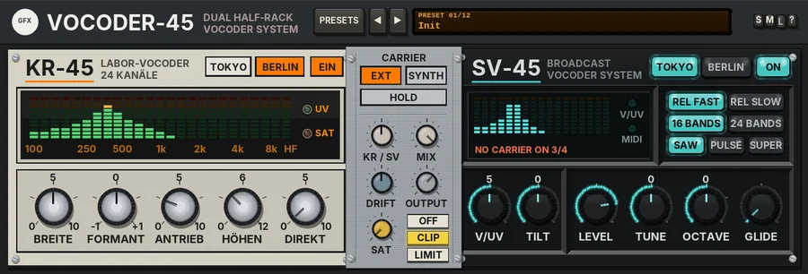

Vocoder-45
Two half-rack vocoders side by side: a gritty 24-band laboratory vocoder and a clean broadcast vocoder with a built-in MIDI synth carrier.

Overview
A vocoder takes the shape of one sound, the modulator (usually a voice), and prints it on another, the carrier (a synth, a pad, a guitar). The modulator is split into many narrow frequency bands, the level of each band is followed, and those levels open and close the same bands on the carrier. The carrier supplies the pitch and tone; the modulator supplies the words.
Vocoder-45 holds two vocoders bolted together by a central mounting bracket. On the left, KR-45 is in the spirit of the Soviet 24-band laboratory vocoders: a dense bank of steep filters, op-amp grit on every carrier band and quick, slightly rippling followers. On the right, SV-45 is in the spirit of the Japanese studio broadcast vocoders: clean, smooth filters (16 or 24 bands), smooth followers, and a voiced / unvoiced detector that fills consonants such as s, t, f and sh with noise so that they stay clear. SV-45 also carries the controls of the built-in synth carrier.
Both units hear the same modulator and the same carrier and run in parallel; the KR / SV knob on the bracket blends them. Each unit has its own ON key, and with both off the dry modulator passes through. Each unit also has its own TOKYO / BERLIN style keys: they change the faceplate, and BERLIN adds an output transformer that thickens the low end a little (even harmonics), while TOKYO is clean. KR-45 opens in BERLIN (bone-grey enamel, German print) and SV-45 in TOKYO (charcoal, glowing display, English print).
Reach for it for
- Classic robot and synth-choir vocals
- Making a pad, string part or guitar "talk"
- Playing a vocal as chords from a MIDI keyboard with the internal synth
- Gritty, lo-fi machine voices (KR-45 with plenty of DRIVE)
- Clear, intelligible broadcast-style vocoding (SV-45 with 24 bands)
- Vocoding drums or percussion onto a synth line for rhythmic textures
Setting it up
The modulator goes into inputs 1/2 (the track's own audio). The carrier comes either from the side-chain on inputs 3/4 (EXT) or from the internal synth played by MIDI (SYNTH). With no carrier there is no vocoder output; the line at the bottom of the SV-45 display tells you when this happens.
With an external carrier (EXT)
- Put Vocoder-45 on the track with the voice (or whatever you want to be the modulator).
- Click that track's ROUTE button and set Track channels to 4.
- On the carrier track (your synth, pad or guitar), add a send to the vocoder track. In the send's settings, set the audio destination to channels 3/4 instead of 1/2.
- If you only want to hear the vocoded result, switch off the carrier track's Master / parent send so the dry carrier does not reach the mix as well.
- Make sure EXT is lit on the bracket. Play both tracks together: the SV-45 display reads CARRIER EXT 3/4 while the carrier is arriving.
With the internal synth (SYNTH)
- Put Vocoder-45 on the voice track and press SYNTH on the bracket.
- Give it MIDI notes: put a MIDI item on the same track, or send MIDI to it from another track (a send with audio set to None and MIDI on). To play live, arm a track with your keyboard as MIDI input, turn record monitoring on, and send its MIDI to the vocoder track.
- Play chords while the voice plays. The synth has eight voices; the SV-45 display shows SYNTH and the number of voices sounding.
- Press HOLD to keep a chord sounding after you let go of the keys (a drone) until you play the next chord.
MIDI is passed through to the next plug-in. Pitch bend moves the synth by up to 2 semitones, and All Sound Off / All Notes Off (CC 120 / 123) release every note. The plug-in listens on all MIDI channels; a MIDI channel parameter (0 = omni, 1 - 16) is available in REAPER's parameter list, but not on the panel.
Controls
The header
- PRESETS
- Opens the full preset list.
- ◄ / ►
- Step to the previous or next preset (wrapping round).
- Preset display
- Shows the preset number and name. Click it for the preset list too.
- S / M / L
- Panel size: small, medium or large. New instances open in Large. The panel also scales to fit the plugin window.
- ?
- Opens a pop-up with the design credit, the GFX website address and the address of this manual. Click anywhere to close it.
Each unit's top row
- TOKYO / BERLIN
- The unit's style. TOKYO is a charcoal face with a glowing display (amber on KR-45, turquoise on SV-45), English print and a clean output. BERLIN is baked enamel (bone grey on KR-45, battleship grey on SV-45) with German print, decimal commas, and an output transformer that adds a little low-end weight; on KR-45 it also makes the bands slightly narrower. Changes fade over 10 ms.
- ON / EIN
- Switches the unit in or out (a 10 ms fade). Both on by default.
KR-45 (LABOR-VOCODER, 24 CHANNELS / 24 KANÄLE)
The display shows the level in each of the 24 bands (100 Hz to 8 kHz) plus a top band above 9.5 kHz (HF), scaled 100, 250, 500, 1k, 2k, 4k, 8k and HF. Two lamps sit beside it: UV lights when the voiced / unvoiced detector adds noise for a consonant, and SAT lights red when the carrier bands drive the op-amps into clipping.
- WIDTH / BREITE
- The width of the bands, 0 to 100% (50% by default). Low settings make very narrow, ringing bands with a metallic, resonant sound; high settings make wide bands that blur together and smear the words. At 50% the bands just meet. The level is compensated as you turn it. The value shows the band Q as well.
- SHIFT / FORMANT
- Formant shift, -1 to +1 octave (0 by default). It moves the carrier's bands up or down against the modulator's, so the voice sounds smaller and brighter (up) or bigger and darker (down) without changing the pitch. Bands pushed out of range fade out.
- DRIVE / ANTRIEB
- Op-amp soft clipping on every carrier band, 0 to 100% (25% by default): from clean to the gritty, buzzing "laboratory" sound. The level is made up as you turn it.
- HF BOOST / HÖHEN
- Lifts the modulator's top bands (a shelf from about 3 kHz), 0 to +12 dB (+4 dB by default), for clearer consonants.
- DIRECT / DIREKT
- Adds the unprocessed modulator to KR-45's output, 0 to 100% (0% by default). A little helps the words come through.
SV-45 (BROADCAST VOCODER SYSTEM)
The display shows the level in each band (16 or 24, plus the top band). Beside it the V/UV lamp lights for consonants, and the MIDI lamp flashes when a note arrives (and stays lit while SYNTH voices are sounding).
The line along the bottom of the display (the hint line) tells you what is feeding the vocoders, or why nothing is coming out:
- CARRIER EXT 3/4
- BERLIN: TRÄGER EXT 3/4. EXT is selected and a carrier is arriving on inputs 3/4.
- NO CARRIER ON 3/4
- BERLIN: KEIN TRÄGER AUF 3/4. EXT is selected but nothing is arriving on 3/4: check the track channels and the send (see Setting it up). Shown in red.
- SYNTH 3 VOICES
- SYNTH is selected and that many synth voices are sounding; with HOLD on it reads SYNTH HOLD 3 VOICES.
- NO CARRIER: PLAY MIDI
- BERLIN: KEIN TRÄGER: MIDI SPIELEN. SYNTH is selected but no notes are playing. Shown in red.
SV-45: the keys
- REL FAST / REL SLOW
- BERLIN: KURZ / LANG. How quickly the bands let go: FAST (30 ms, the default) for crisp, articulate words; SLOW (160 ms) for smooth, legato pads. The level is kept the same.
- 16 BANDS / 24 BANDS
- BERLIN: 16 KAN. / 24 KAN. 16 bands (the default) gives a classic, slightly softer vocoder; 24 bands gives more detail and clearer words. Switching fades out, rebuilds the bank and fades back in.
- SAW / PULSE / SUPER
- BERLIN: SÄGE / PULS / SUPER. The internal synth's waveform: a bright sawtooth (the default), a hollower pulse, or SUPER, three slightly detuned saws for a thick, choir-like carrier.
SV-45: the knobs
- V/UV
- The sensitivity of the voiced / unvoiced detector, 0 to 100% (50% by default). On consonants it adds noise (following the carrier's level) into the carrier's bands above 2.5 kHz, so s, t, f and sh come through even when the carrier has little top end. KR-45 hears this noise too, a little lighter. 0 switches it off; high settings let more of the voice trigger it, for a breathy, whispered sound.
- TILT / NEIGUNG
- A high shelf on SV-45's bands at about 2.5 kHz, -12 to +12 dB (0 by default). The lows move a little the other way, so the loudness stays roughly the same.
- LEVEL / PEGEL
- The synth carrier's level, -24 to +6 dB (0 dB by default).
- TUNE / STIMMEN
- The synth's tuning, -12 to +12 semitones (0 by default).
- OCTAVE / OKTAVE
- The synth's octave, -2 to +2 (0 by default).
- GLIDE / GLEITEN
- Portamento, OFF (AUS) to 1000 ms (OFF by default): each voice slides from its last pitch to the new one.
LEVEL, TUNE, OCTAVE, GLIDE and the wave keys only matter when SYNTH is selected. The synth plays louder with harder velocity and has a breath of noise mixed in, which helps the consonants.
The bracket
- CARRIER: EXT / SYNTH
- The carrier source: EXT = the side-chain on inputs 3/4 (the default), SYNTH = the internal synth played by MIDI. Switching fades over 10 ms.
- HOLD
- Latches the synth's chord after you let go, until you play the next chord. Switching HOLD off releases any notes whose keys are already up.
- KR / SV
- The balance between the two units, 0 to 100% (50% by default; the value reads KR 50 / SV 50). Fully left is KR-45 only, fully right SV-45 only.
- MIX
- Dry modulator against vocoder, 0 to 100% (100% by default = vocoder only).
- DRIFT
- Filter-bank tolerance, 0 to 100% (50% by default). See Drift below.
- OUTPUT
- The output level, -24 to +12 dB (0 dB by default).
- SAT
- Band saturation on the way out: only the lows and highs are saturated (the mids stay clean), with a soft curve that loosens as the level rises. 0% by default.
- OUTPUT CLIP
- A soft clipper on the output (always on) catches overs at the ceiling.
Drift
DRIFT is filter-bank tolerance. Every KR-45 filter sits a little off its nominal centre (about 1.2% at 50%), the modulator and carrier banks each with their own errors, and the filters wander slowly; the followers' release times breathe as well. This gives KR-45 a less perfect, more alive sound. SV-45 is nearly steady, with about a seventh of that. At 0% both banks are perfect and matched.
Knobs: drag up or down (Shift for fine moves) or use the mouse wheel; double-click to reset a knob to its default. While you touch a knob, its value replaces its name.
Presets
Presets set both units (including their styles and ON keys), the synth carrier, the carrier source, HOLD, KR / SV, MIX and DRIFT. OUTPUT, SAT and the output stage are left as they are. The list also has Reset all to defaults, which sets every control, those included, back to its starting value.
- Init
- Both units at their defaults, EXT carrier, an even balance.
- Robot Voice
- The internal synth, a pulse an octave down, with wide, driven KR-45 bands leading: a classic robot.
- Choir Pad (Synth)
- The SUPER synth with a little glide, SV-45 with 24 slow bands leading and narrower KR-45 bands: a smooth vocal choir.
- Talking Strings
- For an external string or pad carrier: narrow, clean KR-45 bands (TOKYO) with 24 slow SV-45 bands.
- Labor Grit
- KR-45 only, wide bands, heavy DRIVE, a big HF lift and lots of drift: raw and gritty.
- Broadcast Clear
- SV-45 only, 24 fast bands, a little more V/UV and tilt: clean and intelligible.
- Whisper Noise
- A quiet SUPER synth with V/UV almost full and a strong top-end tilt: breathy and whispered.
- Formant Up
- Mostly KR-45 with the formants shifted up half an octave: a smaller, brighter voice.
- Formant Down
- Mostly KR-45 with the formants shifted down: a bigger, darker voice.
- Space Station
- The SUPER synth an octave up with a long glide and HOLD on, slow 24-band SV-45, a slight formant shift, full drift and MIX at 85%.
- Drum Vocoder
- Narrow, driven KR-45 bands and a light V/UV, for vocoding drums onto an external carrier.
- Synth Solo
- A sawtooth synth with a little glide, 24 fast SV-45 bands and a touch of DIRECT.
Tips
- The modulator should be dry and fairly even: compress the voice before the vocoder, and keep its reverb after it.
- The carrier needs plenty of harmonics. Bright, buzzy sounds (saws, distorted guitar, organ) vocode far better than soft sines or flutes.
- If the words are hard to follow, try 24 BANDS, REL FAST, more HF BOOST or V/UV, or a little DIRECT.
- If you switch one unit off, keep KR / SV away from the far end of its side: fully right with SV-45 off (or fully left with KR-45 off) leaves nothing to hear.
- For a held drone under a spoken part, play a chord with HOLD on and change it only at the section changes.
- Use SHIFT on KR-45 to change the apparent size of the voice without touching the pitch of the carrier.
File: gfx-vocoder-45.jsfx